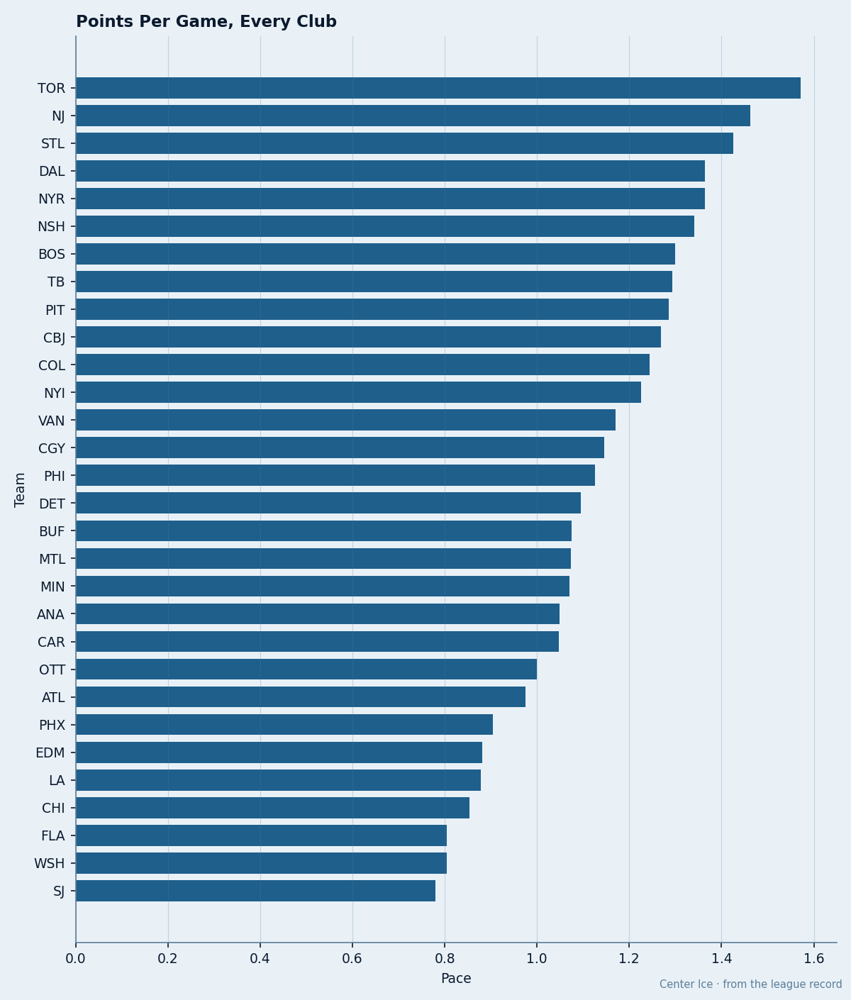
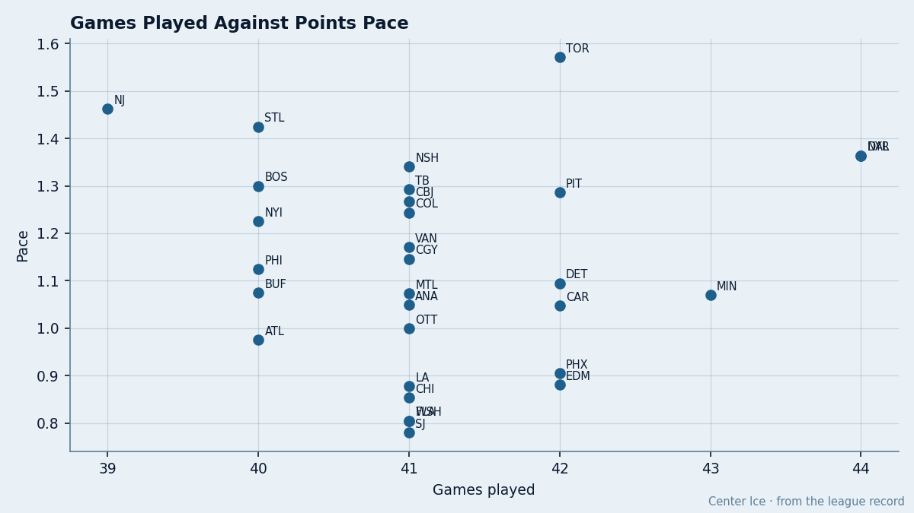
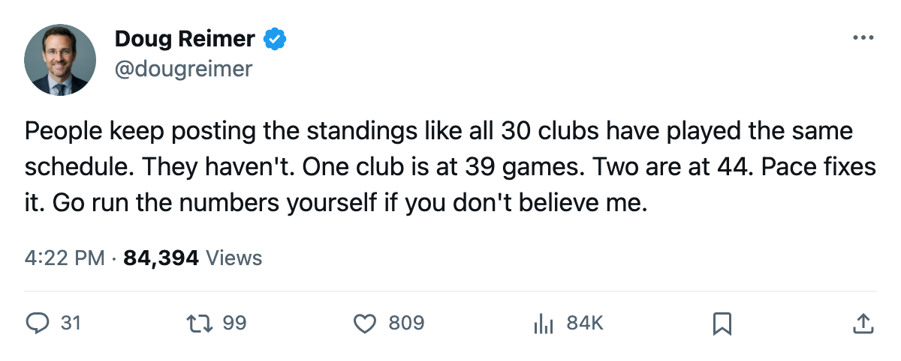
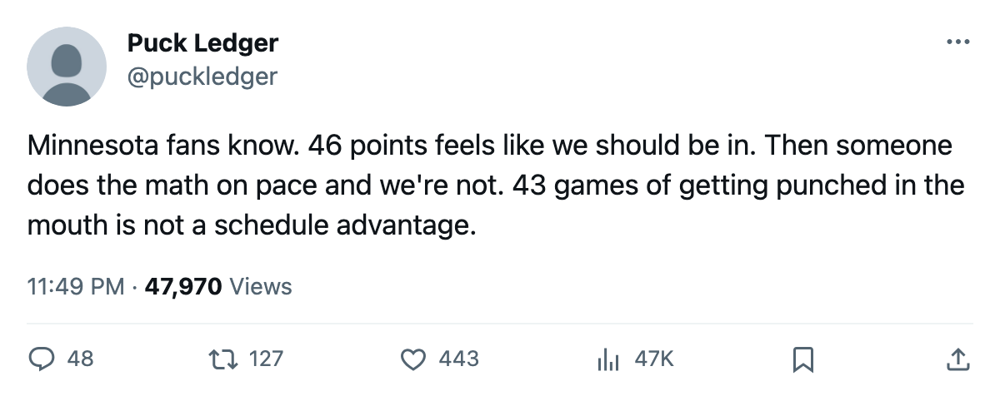

The Table Is Wrong: 6 Clubs Are Ranked 3 or More Places by a Metric That Ignores Their Schedule
Points pace puts Buffalo 3 spots higher, Minnesota 4 lower. The raw standings can't see games in hand.
 Doug ReimerAnalytics editor, ex-video coach · The Slot Report
Doug ReimerAnalytics editor, ex-video coach · The Slot Report
The piece
Buffalo sits 20th in the league by points. By points pace, the Sabres are 17th. Minnesota sits 15th by points. By pace, the Wild are 19th. Four spots separate the two clubs in one direction, and four in the other, depending on which column you trust.
The method is simple. Pace is points per game. It normalizes the schedule and removes the one variable the raw standings cannot account for: games played. In a 30-club league where the schedule has spread 39 to 44 games across clubs through mid-January, the gap between those numbers is not noise. It changes who looks like a playoff team.

The league's five biggest movers between raw points rank and pace rank tell you where the table is lying:
| Club | GP | Pts | Pts Rank | Pace | Pace Rank | Shift |
|---|---|---|---|---|---|---|
 Buffalo Sabres Buffalo Sabres | 40 | 43 | 20 | 1.075 | 17 | +3 |
 Philadelphia Flyers Philadelphia Flyers | 40 | 45 | 17 | 1.125 | 15 | +2 |
 New Jersey Devils New Jersey Devils | 39 | 57 | 4 | 1.462 | 2 | +2 |
 Boston Bruins Boston Bruins | 40 | 52 | 9 | 1.300 | 7 | +2 |
 Minnesota Wild Minnesota Wild | 43 | 46 | 15 | 1.070 | 19 | -4 |
Buffalo gains three spots because they have played fewer games than the clubs around them. Their 1.075 pace is better than  Montreal Canadiens (1.073) and
Montreal Canadiens (1.073) and  Carolina Hurricanes (1.048), yet the raw table puts them behind both.
Carolina Hurricanes (1.048), yet the raw table puts them behind both.
Philadelphia Flyers holds 8th in the East at 45 points, but they have played only 40 games. Their 1.125 pace puts them 15th league-wide, two spots better than their 17th-place raw ranking. The Flyers are not as far behind  New York Islanders (49 points, 1.225 pace) as the points column suggests.
New York Islanders (49 points, 1.225 pace) as the points column suggests.
The Wild are the schedule's biggest victim
Minnesota Wild has played 43 games, tied for the second-most in the league. Forty-six points in 43 games is 1.070 pace, which is 19th in hockey. By the raw table, Minnesota and  Detroit Red Wings both carry 46 points, and the Tigers hold the 8th seed in the West by tiebreaker (wins: Detroit 16, Minnesota 10). By pace, Detroit's gap over Minnesota is 0.025. Minnesota has been paid a penalty in the standings for playing hockey.
Detroit Red Wings both carry 46 points, and the Tigers hold the 8th seed in the West by tiebreaker (wins: Detroit 16, Minnesota 10). By pace, Detroit's gap over Minnesota is 0.025. Minnesota has been paid a penalty in the standings for playing hockey.
Carolina Hurricanes falls 3 spots too. The Hurricanes have played 42 games and carry 44 points. At 1.048 pace they are 21st, not 18th. Carolina has lost 207 man-days to 27 injury spells, and their room is the 2nd-unhappiest in the league at 87.5 club average morale. The raw table gives them credit for grinding through a full schedule; pace says the product is not that good.

The East's bottom three and the West's bottom three, measured honestly
In the East, the 8th-place line runs through Philadelphia at 1.125 pace. The three clubs below them, Montreal Canadiens, Carolina Hurricanes, and Buffalo Sabres, sit at 1.073, 1.048, and 1.075 respectively. Buffalo is closer to the line than Carolina by pace. The raw table says otherwise.
| East Club | GP | Pts | Pace | Gap to 8th (pace) | Games vs 8th |
|---|---|---|---|---|---|
| Philadelphia Flyers (8th) | 40 | 45 | 1.125 | — | — |
| Buffalo Sabres | 40 | 43 | 1.075 | 0.050 | 0 |
| Montreal Canadiens | 41 | 44 | 1.073 | 0.052 | 1 |
| Carolina Hurricanes | 42 | 44 | 1.048 | 0.077 | 2 |
Buffalo is 0.050 behind Philadelphia in pace and has played the same number of games. Carolina is 0.077 behind and has played two more. The Hurricanes' extra schedule has not bought them a better pace.
In the West, the 8th-place line is Detroit at 1.095. Minnesota Wild at 1.070 and  Mighty Ducks of Anaheim at 1.049 are below. Minnesota's gap to Detroit is 0.025. Anaheim's gap is 0.046. Neither club is close enough for the schedule to save them.
Mighty Ducks of Anaheim at 1.049 are below. Minnesota's gap to Detroit is 0.025. Anaheim's gap is 0.046. Neither club is close enough for the schedule to save them.
What this means by the deadline
68 days remain before what the calendar has as the trade deadline. The clubs most exposed to a schedule correction are the ones with games in hand who look good in the raw table but not in pace: New Jersey Devils at 39 games and 1.462 pace is genuinely elite. But Boston Bruins at 40 games and 1.300 pace is not the 9th-best team in hockey; they are the 7th-best, and that gap between those two numbers changes what a buyout looks like, what a rental costs, and who a GM calls.
Minnesota has no games in hand. They have played 43 and will play 39 more. Their pace is not going up unless the roster changes. The 30 injury spells and 119 man-days lost have not stopped: Pihlman, Park, and Walz each appear three times in the injury ledger this season. The Development Index has no Minnesota riser. The Wild are not a team the schedule is hiding. They are a team the schedule has finished exposing.

